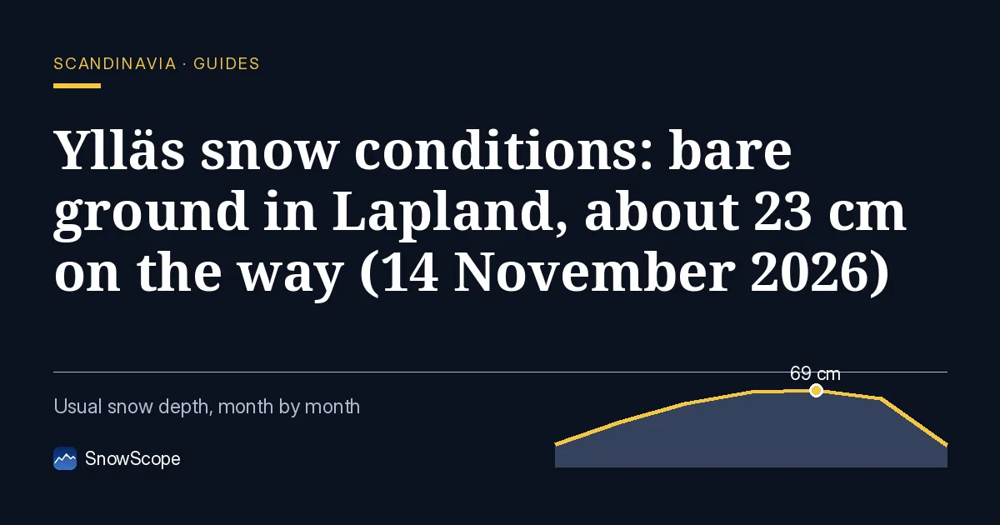

Ylläs snow conditions: bare ground in Lapland, about 23 cm on the way (14 November 2026)
Western Lapland is unusually brown for the middle of November. On the morning of 13 November the weather stations around Ylläs measured 0 cm at Kolari Kattilamaa (175 m, 23 km away), 0 cm at Kittilä Pakatti, 0 cm at Muonio, and only 2 cm at Kittilä Kenttärova, the highest of them at 351 m. A usual 14 November in our 46-winter record has about 18 cm at Ylläs. The good news is the week ahead.
See the live snow forecast for Ylläs in the SnowScope appSnow depth, powder alerts and the 3D map, free.

Where the snow went
Our estimate of new snow in the last seven days is less than 1 cm, so there is little reason to expect much more on the fells than at the stations. And the stations are clear: the whole area between Kolari, Muonio and Kittilä was snow-free on 13 November, except a thin layer on the highest point.
This is rare. In our record, the ground at Ylläs is white on 14 November in 99 % of winters, and one winter in ten still has 6 cm on that date. This year is below even that low mark.

The week ahead brings real snow
We expect about 23 cm over the next seven days. The other forecasts we compare with are a bit higher, from 27 to 38 cm. They agree that it stays cold: no rain at all, and snow down to the lowest valleys. That is enough to cover the fells properly for the first time this season.
What a normal Ylläs winter looks like
Our 46 past winters give a usual depth of 24 cm on 21 November, 30 cm on 30 November and 39 cm on 15 December. A middle winter peaks at about 81 cm, and the ground stays white for about 209 days. Unlike southern Finland, Ylläs has not lost snow over the record: the middle peak was 81 cm in the first 15 winters and 83 cm in the last 15.
When the slopes open
The ski resort's own homepage says it is closed now and opens on 21 November, and the snow cannons have started. That opening relies on made snow on the main runs; the forecast snowfall will help, but it will not make a full natural base by then.
Tips for skiers
- Cross-country tracks on natural snow will need most of this week's snowfall before they are good; expect early tracks on made snow first.
- With bare ground under 20 cm of new snow, skiing off the prepared slopes means stones and frozen ground just below.
- Days are already short here: plan outdoor time around the middle of the day.
More maps (external sites)
References and credits
- Finnish Meteorological Institute, open data (CC BY 4.0) en.ilmatieteenlaitos.fi/open-data
- SMHI, open data: daily snow depth at Swedish weather stations www.smhi.se/data/meteorologi/ladda-ner-meteorologiska-observationer
- Ylläs Ski, official site: opening dates and lift status, read 2026-11-13 ski.yllas.fi/
About these numbers
Measured snow: morning readings of 13 November 2026 at the official weather stations of Sweden (SMHI open data), Finland (FMI open data, CC BY 4.0) and Norway (MET Norway station reports, CC BY 4.0, as published by Ogimet). Norway's national snow map seNorge (NVE and MET Norway, NLOD) gives the estimates on a 1 km grid for the slopes. Our numbers: SnowScope's forecast for the next seven days at three heights of the ski area, compared with independent forecasts (ECMWF, ICON, GFS, GEM) for 14 to 20 November; snow history of 46 past winters (1980-81 to 2025-26), a model of the past corrected for height. Opening dates: the resorts' own pages, read on 13 November 2026. Run length and lift count: OpenSkiMap mapping.
Official avalanche bulletins: EAWS – European Avalanche Warning Services
Cite this report
For research, teaching or the press: the numbers and charts are free to reuse under CC BY 4.0 with this citation.
SnowScope (2026), Ylläs snow conditions: bare ground in Lapland, about 23 cm on the way (14 November 2026), https://snowscope.app/blog/en/2026/11/yllas-snow-conditions-14-november-2026.html, accessed 2026-11-14
SnowScope (Atlas Labs). (2026, November 14). Ylläs snow conditions: bare ground in Lapland, about 23 cm on the way (14 November 2026). SnowScope snow reports. https://snowscope.app/blog/en/2026/11/yllas-snow-conditions-14-november-2026.html
BibTeX
@misc{snowscope2026yllassnowconditions14nov,
author = {{SnowScope (Atlas Labs)}},
title = {Ylläs snow conditions: bare ground in Lapland, about 23 cm on the way (14 November 2026)},
year = {2026},
month = nov,
howpublished = {\url{https://snowscope.app/blog/en/2026/11/yllas-snow-conditions-14-november-2026.html}},
note = {Published 2026-11-14 13:29 UTC; accessed 2026-11-14}
}· CC BY 4.0 · Methods, data and tools →
Ylläs: snow and temperature by height, this winter vs last (tools) →
Follow Ylläs
Free: a message when fresh snow is coming, and the forecast every morning.
More snow reports

Pila above Aosta pairs a flat 60.00 EUR day pass with reliable December snow on its upper slopes.

Orcières Merlette offers a high base at 1826 m and a 6-day pass from 227 EUR, making it a reliable choice for a December ski trip.

Obertauern December skiing: 43 cm on a typical 15 December at mid-mountain, and a 6-day pass of EUR 331 before Christmas. Snow history and prices.